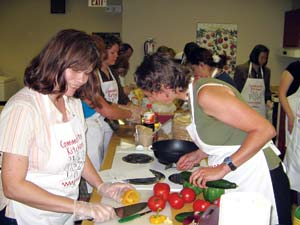

The best way to preserve tomatoes, green beans, applesauce, and many other fruits and vegetables is to can them in reusable glass jars. Good equipment can be costly, though, and working alone in a hot kitchen gets old fast. So it’s no surprise that the latest trend in canning is to do it as a group. Friends, neighbors and total strangers gather in homes, churches and schools to put up the shared bounty from each others’ gardens. Experience is optional, and many canning kitchens are managed by trained pros, so they’re great places for newbie canners to squelch their fears of poison pickles and exploding pressure canners. Sharing resources also helps reduce the equipment and energy costs, and the partylike atmosphere makes work feel like fun.
“Everyone loves the camaraderie,” says Harriet Fasenfest, who teaches canning classes with her business partner, Marge Braker, in Portland, Ore. “Stories are exchanged, fresh produce and preserved foods are sampled, and everyone is on the same level of discovery.” Beginning the season with berries and ending with tomatoes, Fasenfest and Braker have found that urban foragers with no canning experience are eager to take it up.
In response to the question “What do I do with all this produce?” CSA (community-supported agriculture) growers like Renae Mitchell of Elderberry Acres in Whitewater, Wis., conduct canning workshops with customers and friends. “With beginners, we always make a plain tomato sauce and a salsa,” Mitchell says. In Jenison, Mich., the 250-member Trillium Haven Farm hosts an annual tomato canning festival.
Numerous canning kitchens are sponsored by local cooperative extension programs, such as the one held at a high school in Montgomery County, Va. In Canada, Vancouver-based Community Kitchens helps connect gardeners and cooks with more than 100 active programs. A call to your local extension office is a good way to locate a program near you.
Community-based food preservation is nearly as old as civilization itself. In modern times, it became a national phenomenon as part of the U.S. government’s 1917 food conservation drive for war relief. As victory gardens overflowed, community markets and canneries sprang up from Maine to California, with many canning kitchens turning out hundreds of quarts a day. More recent efforts to establish canning kitchens for low income families have enjoyed some success, but the current trend is different. Its driving force is the exploding interest in fresh, locally grown food.
“Sharing experiences and recipes, and successes and failures, is a valuable part of group canning,” Marge Braker says. Once the skills are learned, they become second nature, just like eating homemade jam on hot toast in the middle of winter.
|
 WWW.COMMUNITYKITCHENS.CA Canning as a community is less work, more fun and a great place for novice canners to learn food preservation basics. |
|
|